2017.11.25 9:45 - 18:00
主催: Fukuoka.rb / Engineer Lab. Fukuoka
About
「もう一度、Rubyと出会う」
九州Ruby会議01から9年、
今皆さんにとって/私たちにとって、
Rubyとはどのような技術なのでしょうか。
新しいコミュニティの場で、
一緒に語り合い、考えてみませんか。
Parties
※ 本編とは別にチケットをお求めください
前夜祭 by ピクシブ
※販売を再開しました！
日時: 2017/11/24(金) 19:00 〜 22:00
会場: The Company（福岡市博多区祇園町8-13 第一プリンスビル 1F）
懇親会 by GMOペパボ
日時: 2017/11/25(土) 19:00 〜 21:00 (Open 18:30)
会場: HAKATA Trattoria BISTRO ONO（福岡県福岡市中央区天神1-7-11 天神イムズB1）
Keynote Speakers
笹田 耕一
クックパッド株式会社
大学在学時からRuby向け仮想マシンYARVを開発し、2007年に「Ruby 1.9」に採用される。以降、Rubyコミッターとして、言語処理系の高速化に従事し、仮想マシンやガーベージコレクションの性能改善などを行なう。
東京大学大学院情報理工学系研究科助手、助教、講師（2006～2012）。
株式会社セールスフォース・ドットコム、Heroku, Inc.（2012～2017）。
現在クックパッド株式会社にてRubyインタプリタ開発に従事（2017～）。
Rubyアソシエーション理事 （2012〜現任）。博士（情報理工学）。未踏ユーススーパークリエータ（2004）、情報処理学会山下記念研究賞（2015）。他、受賞多数（詳細）。